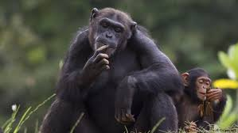
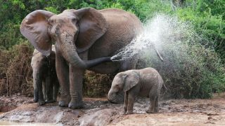

El chimpancé ; es nuestro pariente vivo más próximo, con el que compartimos el 98 por ciento de nuestro código genético. Según parece, también compartimos un antepasado común que vivió hace entre cuatro y ocho millones de años.
Los chimpancés viven en comunidades formadas por varias docenas de individuos, y se han habituado a vivir en las junglas, los bosques y las sabanas de África.
Aunque normalmente caminan utilizando las cuatro extremidades (a cuatro patas), son capaces de levantarse y caminar erguidos. También son capaces de moverse eficazmente saltando de rama en rama por los árboles, donde obtienen la mayor parte de su alimento. Por lo general, los chimpancés duermen también en los árboles, en nidos hechos con hojas.
Chimpancé
Se alimentan normalmente de frutas y plantas, aunque también comen insectos, huevos y carne, incluida la carroña. Su dieta es sumamente variada e incluye cientos de alimentos conocidos.
Además, el chimpancé es una de las pocas especies animales que se sirve de herramientas. Moldean palos y los usan para hacer salir a los insectos de sus guaridas o para sacar larvas de troncos de árbol. También utilizan piedras para abrir frutos secos y emplean hojas a modo de esponja para recoger agua potable. Los chimpancés son capaces incluso de aprender algunos elementos básicos del lenguaje humano de signos.
Las hembras pueden dar a luz en cualquier época del año, generalmente a un único vástago que vive agarrado al pelo de la madre y más tarde se cuelga de su espalda hasta que cumple los dos años. Las hembras son fértiles desde los 13 años, mientras que los machos no se consideran adultos hasta cumplidos los 16.
Pese a que chimpancés y humanos están estrechamente emparentados, los simios han padecido mucho a manos de los hombres. Estos grandes simios se hallan en peligro de extinción y siguen estando amenazados por cazadores que trafican con su carne y por la destrucción de su hábitat
ELEFANTE
Los elefantes tienen el mayor cerebro entre los animales terrestres, con una masa superior a los cinco kilos. Además, cuenta con patrones de giros más intensos que el de los primates y humanos. Sin embargo, su funcionamiento sería menos complejo que en los delfines y demás cetáceos.
Por otro lado, el volumen del córtex de un elefante permite un enorme abanico de procesamientos cognitivos. Es resultado de una capacidad neuronal superior a la diagnosticada en cualquier primate y cetáceo. Y ello se traduce en diferentes tipos de inteligencia, como veremos a continuación.
Una red cerebral muy desarrollada
Su estructura cerebral es compleja y sofisticada, con más de 250 000 millones de neuronas, bastante similar a la de los seres humanos. De hecho, la corteza cerebral de un elefante tiene la misma cantidad de neuronas y sinapsis que la de un humano.
Comportamiento elefante africano
¿Y qué nos dice todo ello? Primero, que los elefantes serían tan inteligentes –de una forma general– como los delfines y los chimpancés. Además, tendrían la misma capacidad cognitiva para la utilización y fabricación de herramientas que los humanos. Utilizan su trompa como si fueran brazos para manipular objetos con total destreza.
Conocer mejor la inteligencia del elefante
La inteligencia del elefante era conocida y admirada por muchas civilizaciones clásicas. Aristóteles, el filósofo griego autor de la ‘Metafísica’, solía afirmar que los elefantes superaban a todos los demás animales en mente e ingenio.
Con seguridad, estas afirmaciones se deben a la observación de la capacidad cognitiva, social y emocional de estos notables mamíferos.
Los elefantes, ya sean asiáticos o africanos, demuestran una notable variedad de comportamientos y expresiones. Además, diversos estudios comprobaron que experimentan el duelo psicológico tras la pérdida de un ser querido.
Animales vivíparos: elefante
Su empatía y sociabilidad son tan evolucionadas que comprenden el altruismo, el cuidado maternal, la cooperación y la compasión de sus hermanos.
Gestos y lenguaje no verbal
La gran cantidad de sinapsis de su corteza cerebral permite a los elefantes también comprender muy bien el lenguaje no verbal. Y se supone que el volumen del córtex también está asociado a su elevada capacidad de mimetismo.
Los elefantes no imitan solamente gestos humanos, sino también los sonidos de su entorno. Una habilidad que ha sido diagnosticada solo en cetáceos, primates, murciélagos y aves.
Manada de elefantes
Otra capacidad curiosa y destacada es que los elefantes entienden el sentido del juego. En diversas ocasiones, paquidermos africanos han sido vistos mientras se entrenaba para jugar con agua u objetos de su hábitat.
Inteligencia del elefante: la capacidad de resolver problemas
Quizá una de las más notables expresiones de la inteligencia del elefante se encuentre en su habilidad para resolver problemas. En su hábitat natural, estos mamíferos pueden cambiar radicalmente su comportamiento para lidiar con situaciones adversas.
Todas estas son demostraciones características de una inteligencia compleja, como la que poseen los humanos y los primates.
Estudios y pruebas
En 2010, algunos elefantes participaron de un interesante estudio. La tarea consistía en agarrar simultáneamente los dos extremos de una cuerda para ganar un premio.
El objetivo era observar la habilidad cooperativa y la capacidad de trabajar en conjunto. Los resultados colocaron a los elefantes en el mismo nivel de los chimpancés en términos de capacidad cooperativa; pero también algunos acontecimientos accidentales demostraron esta capacidad de lidiar con nuevos desafíos.
Animales que viven en grupos elefantes
Uno de estos estudios fue la acción que llevó a cabo un elefante asiático en Estados Unidos: apodado Bandula, protagoniza una increíble escapada en la que el mamífero consiguió abrir diversos aparatos que aseguraban sus cadenas, inclusive un gancho brummel, que debe estar perfectamente alineado para abrirse.
La memoria de elefante
Sabemos que los elefantes son dueños de destacadas habilidades cognitivas, ¿pero es verdad que tienen muy buena memoria?
Estos paquidermos también poseen un hipocampo complejo y de gran tamaño. El hipocampo es una estructura cerebral que pertenece al sistema límbico. Su principal función está asociada al procesamiento de ciertos tipos de memoria, principalmente la espacial.
Las dimensiones del hipocampo de un elefante superan las de cualquier primate, cetáceo o ser humano. Además, pueden utilizar más de de un 0,7% de sus estructuras cerebrales, mientras que los humanos suelen usar apenas un 0,5%.
El volumen neuronal y su intenso funcionamiento permiten que los elefantes tengan una memoria realmente privilegiada. Este aspecto puede ser conocido en numerosos estudios científicos, pero también en los comportamientos en estado silvestre.